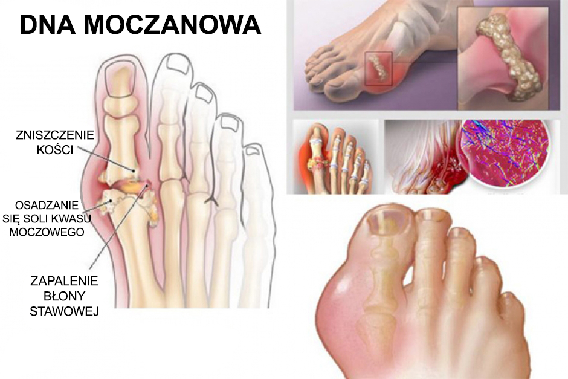

Sensacyjne wiadomości dzisiaj-w Polsce rozpoczęła się akcja charytatywna dystrybucja wysokiej jakosiego leku do pełnej odbudowy stawów . Każdy mieszkaniec Polski, który potrzebuje leczenia stawów, może wypełnić formularz wniosku i otrzymać lek PO .
Co dokładnie spowodowało rozpoczęcie takiej akcji? Jak długo to potrwa? Czy lek jest naprawdę darmowy i czy jest naprawdę tak skuteczny? Nasza redakcja zrozumiała ten problem. Usiądź wygodnie i czytaj!
Aby zrozumieć sytuację, pomoże nam Twórca i organizator pierwszego w kraju Programu Wykrywania Wczesnego Zapalenia Stawów. Organizator cyklicznych Konferencji Leczenia Biologicznego Chorób Reumatycznych w Polsce oraz Krajowej Konferencji Diagnostyki Obrazowej Chorób Reumatycznych i Monitorowania Leczenia Biologicznego. Prof. dr hab. n. med. Sławomir Jeka.
Sławomir Jeka:
Prof. dr hab. n. med. Sławomir Jeka, Specjalista w zakresie medycyny rodzinnej, chorób wewnętrznych i reumatologii. Kierownik Kliniki Reumatologii i Układowych Chorób Tkanki Łącznej Szpitala Uniwersyteckiego nr 2 im. dr J. Biziela w Bydgoszczy Pracownik naukowy Collegium Medicum Uniwersytetu im. Mikołaja Kopernika w Toruniu, Prezes i Vice-Prezes Sekcji Badań Obrazowych Polskiego Towarzystwa Reumatologicznego (PTR), Prezes i Vice-Prezes Kujawsko-Pomorskiego Oddziału PTR, wieloletni członek Zarządu Głównego PTR, były wieloletni konsultant wojewódzki w dziedzinie reumatologii województwa kujawsko-pomorski. Twórca i organizator pierwszego w kraju Programu Wykrywania Wczesnego Zapalenia Stawów. Organizator cyklicznych Konferencji Leczenia Biologicznego Chorób Reumatycznych w Polsce oraz Krajowej Konferencji Diagnostyki Obrazowej Chorób Reumatycznych i Monitorowania Leczenia Biologicznego. Praktyka lekarska - 45 lat.
- Czy taka akcja ma miejsce teraz w Polsce, czy to tylko plotki?

- To czysta prawda! Od naprawdę każdy mieszkaniec Polski może otrzymać po lek na odbudowę stawów w ramach akcji charytatywnej "zdrowie narodu ".
- Tego rodzaju akcje dla Polski to coś zupełnie nowego! Co było przyczyną?
- Powodem rozpoczęcia akcji charytatywnej były fatalne statystyki zachorowalności i śmiertelności wśród emerytów i rencistów, a także osób w wieku produkcyjnym z powodu chorób stawów. W ciągu ostatnich sześciu miesięcy liczba obywateli Polski, którzy zwrócili się do placówek medycznych z chorobami stawów o różnych stopniach nasilenia, wzrosła 3 razy w porównaniu z rokiem. Jest to poziom krytyczny, który został odnotowany w ciągu ostatnich 12 lat. Przeważnie są to osoby w przedziale wiekowym od 44 do 76 lat, cierpiące na zapalenie stawów, artrozę, osteochondrozę, dnę moczanową i inne choroby stawów przez 7-25 lat. Szczególnie sytuacja pogorszyła się w związku z COVID. 45% osób, które przeszły chorobę po sześciu miesiącach lub roku, zaczęło zauważać u siebie problemy ze stawami o postępującym charakterze. 68% ankietowanych w wieku 50-75 lat ma choroby stawów, a to trochę więcej niż połowa.
- To okropne! Nie wyobrażaliśmy sobie nawet, że w Polsce jest tak duża liczba osób z chorobami stawów. W końcu na naszym rynku farmaceutycznym jest wiele dobrych leków.
- Tak, jest dużo leków. Ale dobrych jest niewiele i często nie są one dostępne dla zwykłego obywatela, po prostu nie są dostępne lub cena jest zbyt wysoka. 95% leków na stawy jest w stanie jedynie złagodzić objawy, złagodzić ból, przywrócić ruchomość stawu na pewien czas. Takie leczenie nazywa się objawowym, ale nie leczy...tylko łagodzi objawy. A to jest nawet gorsze niż brak leczenia, ponieważ gdy chory staw przestaje boleć, osoba zaczyna go bardziej obciążać, chodzić więcej itp., co z kolei powoduje jeszcze WIĘKSZE zniszczenie stawu. Z czasem leki objawowe przestają działać, ból powraca z nową siłą. Większość ludzi nawet o tym nie wie i jest pewna, że jakiś krem może na przykład pozbyć się zapalenia stawów. To absolutna bzdura! Staw należy leczyć od wewnątrz, przywrócić go, oczyścić i dopiero wtedy choroba zacznie się cofać.
- ЯJak dokładnie można odnowić staw i wrócić jego funkcjonowanie?
- Wiesz, jaki jest korzeń wszystkich chorób stawów? Wszystko jest bardzo proste-powód jest jeden- odkładanie się kryształów soli kwasu moczowego z powodu zaburzeń krążenia i krążenia płynu maziowego.
Moczany-sole kwasu moczowego, przyczyna rozwoju dny moczanowej. Osteofity-sole kalcynowane, są przyczyną pozostałych 97% chorób stawów i kręgosłupa. Wszystkie rodzaje zapalenia stawów i artrozy, osteochondroza, osteoporoza, reumatyzm, zapalenie kaletki, a nawet higroma. Wszystkie te choroby mają jedną przyczynę-złogi osteofitów.
Sole, osadzające się na powierzchni stawu, jak papier ścierny, są ostrzone przez tkanki okołostawowe - kości i chrząstki. Rosnące kryształy soli kwasu moczowego zaczynają uszkadzać tkankę mięśniową, ścięgna, naczynia krwionośne i naczynia włosowate. Powodując w ten sposób stan zapalny, infekcję, obrzęk i ciężki ból.
W zaawansowanych przypadkach duże nagromadzenie soli może łatwo odłamać część kości ostrym ruchem, powodując w ten sposób całkowitą niezdolność i trwale unieruchomić staw.
Wzrost kryształów soli kwasu moczowego na powierzchni stawu jest główną przyczyną wszystkich patologii
Bardzo niebezpieczne nieporozumienie, że wapń jest dobry dla stawów. Tak, wapń jest dobry, ale jest dobry tylko dla zdrowych stawów. Kiedy stawy są już obolałe lub chrupiące, wówczas utworzyła się już w nich warstwa osteofitów, a wapń, oprócz wzmocnienia tkanki kostnej, wzmacnia również sole-osteofity, zaostrzając i przyspieszając ich wzrost.
W ten sposób wykwalifikowani reumatolodzy ze Szwajcarii lub Niemiec, na przykład, najpierw przywracają krążenie krwi w chorym stawie, aby sole kwasu moczowego nagromadzone przez lata były z niego usuwane. To z kolei przywraca normalne krążenie mazi stawowej i rozpoczyna proces naprawy tkanek stawu. W rzeczywistości ludzkie stawy są bardzo regeneracyjne, mogą samodzielnie się regenerować, jak ogon jaszczurki. Wystarczy im w tym trochę pomóc-uwolnić kryształy soli kwasu moczowego od "przyklejonych" na nich, a proces będzie przebiegał niezależnie.

- Lek, który jest dystrybuowany po - ? Czy jest w stanie oczyścić stawy?
- Dokładnie! Jest to jeden z najlepszych preparatów na całym świecie do oczyszczania i głębokiej naprawy stawu. W Ameryce jest sprzedawany w każdej aptece i jest dostępny dla absolutnie każdego. Zawiera wyłącznie naturalne składniki roślinne i zwierzęce, witaminy i minerały. Jednym z nich jest na przykład ekstrakt z róg renifera - to dzięki tej substancji następuje wzrost róg zwierzęcia. Kolejny-tłuszcz rekina, który wzmacnia kość, nawilża i uruchamia prawidłowe krążenie krwi, co z kolei rozpoczyna proces rozpuszczania narośli soli kwasu moczowego. Wszystkie składniki są całkowicie bezpieczne i hipoalergiczne, lek nie ma żadnych skutków ubocznych. Działa stopniowo:
- Faza 1: łagodzenie objawów, ból, niszczenie infekcji;
- Faza 2: rozpoczęcie procesu oczyszczania z nagromadzenia soli kwasu moczowego;
- Faza 3: oczyszczanie stawu i normalizacja krążenia i krążenia mazi stawowej;
- Faza 4: całkowita regeneracja tkanki kostnej i chrzęstnej;
- Faza 5: utrzymanie i utrwalenie wyniku, wzmocnienie odporności (lek gromadzi się w ogronizmie i jest całkowicie wydalany sześć miesięcy po użyciu ostatniej kapsułki, ten czas jest więcej niż wystarczający, aby staw całkowicie wyzdrowiał, a choroba nie powróciła)
Tak więc w ciągu 4 tygodni stosowania moi pacjenci pozbywają się nawet najcięższego stadium artrozy lub zapalenia stawów, ale raz na zawsze zapominają o chorobie.
Na tym zdjęciu rentgenowskim chcę pokazać efekt działania leku. Odbudowa uszkodzonego stawu 4 tygodnie po zastosowaniu kapsułek "":
- Kto sponsoruje akcję charytatywną? W końcu, aby rozdać lek wszystkim potrzebującym, potrzebujesz dużo pieniędzy?
- To wymaga sporej kwoty. Ale my Polskie Towarzystwa Reumatologicznego (PTR) zawarliśmy umowę z naszymmi kolegami na współpracę i wymianę doświadczeń w wielu projektach. Innymi słowy, wymieniliśmy niektóre z naszych osiągnięć i projektów na sfinansowanie akcji charytatywnej i zakup dużej partii leku po kosztach. Istnieją jednak wady, partia z pewnością nie jest nieskończona, więc liczba preferencyjnych jednostek leku jest ograniczona.
- Lek szybko się rozchodzi?
- Tak, bardzo szybko. Na dziś pozostało już niewiele jednostek. Dlatego polecam każdemu, kto chce raz na zawsze pozbyć się chorób stawów, złożyć wniosek już teraz i nie wahać się ani chwili. Nie wiemy, kiedy będziemy mogli zorganizować kolejną akcję dystrybucyjną, jesteśmy Polskiego Towarzystwa Reumatologicznego (PTR) - organizacją non-profit, która jest bardzo słabo finansowana. Najprawdopodobniej kolejne akcje będą już za jakąś symboliczną sumę pieniędzy. Szkoda, że państwo źle finansuje medycynę, a my tak bardzo chcemy, aby ludność naszego kraju była zdrowsza. Możesz wydać więdnięcie tutaj, pod tym wywiadem lub na oficjalnej stronie dystrybutora leku w Polsce.
- Czy każda osoba, która złoży wniosek, otrzyma lek?
- Tak! Dopóki istnieje możliwość przesłania formularza, oznacza to, że lek jest nadal w magazynie, gdy tylko skończą się nasze zapasy, nie będzie już formularza i będziemy musieli poczekać około pół roku lub roku.
- Co się dzieje po wysłaniu wniosku?
- Nasi eksperci skontaktują się z Tobą i doradzą w sprawie przyjmowania leku, dowiedzą się o numerze oddziału Poczta Polska, na którym wygodnie będzie odebrać lek. Następnie lek jest wysyłany do Ciebie i po 1-3 dniach będzie z tobą. W każdej chwili będzie można uzyskać dodatkową konsultację, a po zakończeniu kursu prosimy o opinie i ocenę skuteczności leku. Dla nas najważniejsze jest to, aby człowiek naprawdę wyzdrowiał. 98% ankietowanych W Ameryce oceniło lek - na doskonały.
- Czy lek kiedykolwiek pojawi się na półkach aptecznych w naszym kraju?
- To pytanie jest na razie zawieszone w powietrzu. Bardzo chcielibyśmy, aby leki tego rodzaju były dostępne dla każdego, tak jak W Ameryce. W Ameryce jest sprzedawany w każdej aptece. Nasze Apteki wahają się co do tego leku, ponieważ znacznie zmniejszy zakup wszystkich innych (nieskutecznych), poziom zysku spadnie. Rozważana jest opcja sprzedaży po bardzo zawyżonej cenie, w oparciu o logikę, że skuteczny lek powinien być bardzo drogi, ponieważ osoba, która chce się wyleczyć, znajdzie na to środki. Ale powiedz mi, gdzie Polski emeryt wziąć środki na leczenie... Dlatego kwestia dostawy do aptek w Polsce nie została jeszcze rozwiązana...
- Kiedy kończy się akcja charytatywna dystrybucji po ?
- Promocja obowiązuje do włącznie. Dlatego pospiesz się, gdy lek jest nadal dostępny. Dbaj o siebie i swoich bliskich!
Nasza redakcja szczegółowo przestudiowała problem, rozmawialiśmy z lekarzami i emerytami, że już otrzymali lek - i zdecydowanie zalecamy wszystkim cierpiącym na choroby stawów, aby wysłać wniosek o otrzymanie. Postanowiliśmy wesprzeć akcję charytatywną i zamieściliśmy formularz na otrzymanie leku bezpośrednio na naszej stronie internetowej. Wystarczy wypełnić imię i nazwisko oraz numer telefonu, a specjaliści skontaktują się z tobą wkrótce! Uważaj na podróbki i nie zamawiaj prepapratu z zasobów stron trzecich.
Nawet nie wierzę, że w Polsce w końcu można dostać taki lek!
W stawie biodrowym był silny ból, 50% zostało zniszczonych, lekarze doradzali operację, mówili, że nie można już rozwiązać tego problemu. Ale potem natknąłam się na , operacja została opóźniona o kilka miesięcy. W rezultacie operacja nigdy nie była konieczna, ból zniknął, ruchliwość powróciła. Robiłam zdjęcia rentgenowskie, lekarze byli w szoku, nie wierzyli jak to się stało. Bardzo się cieszę, że ten lek nam się przydarzył, teraz polecam go wszystkim.
Mam już dostarczone, przyjmuję tydzień. Od pierwszych kapsułek ból zaczął ustępować, a ruchliwość kolana stała się lepsza. Powiedziano mi, że efekt jest kumulatywny. Biorę codziennie i naprawdę czuję poprawę, jestem zadowolony, żadnych skutków ubocznych. To po 5 latach codziennej męki bólu...
Nie pierwszy raz natknąłam się na informacje o , nawet mój sąsiad powiedział mi o tym. A potem pojawił się taki program społeczny, wierzę, że lek pomoże wielu. Już złożyłam wniosek. Powiedzieli, że lek został dosłownie jeden. Więc kto musi pilnie zamówić ... a potem go nie zdobędziesz.
Przez pierwsze 2 tygodnie nie widziałam efektu i myślałam, że to bzdura, a potem spał obrzęk i stan zapalny, ból zniknął. Nadal biorę od czasu do czasu w celu zapobiegania zapaleniu stawów i nic mi nie przeszkadza. Bardzo zadowolona.
Przez trzy lata cierpiałam na artrozę krążków międzykręgowych, ale po miesiącu stosowania nic z tego nie zostało. , wszystko wrócił do normy. Bez bólu i dyskomfortu, choroba zniknęła. Każdemu, kto cierpi na stawy od wielu lat, zdecydowanie doradzam. Bo potem bardzo trudno będzie zdobyć .
Czy kapsułki są naprawdę tak skuteczne?
Mam już paczkę. Naprawdę mam nadzieję, że to pomoże.
jest najlepszym lekarstwem na świecie. Kupiłam go dla mamy na zapalenie stawów kilka lat temu, mama pomogła niemal natychmiast. W ciągu 4 tygodni całkowicie wstała i uciekła do swojego ulubionego ogrodu)
Również złożyłam wniosek, naprawdę czekam! Mam nadzieję, że pomoże pozbyć się silnego bólu w dolnej części pleców.
100% pomoże! Pomógł mi rok temu, że nadal nic nie dręczy. Teraz zamówiłam dla męża, coś boli staw biodrowy. Ani chwili nie wątpiłam, że lek jest naprawdę bardzo dobry.
Biorę kilka tygodni, wynik jest już odczuwalny. Diagnozą jest artroza palców. Ból stał się znacznie słabszy, mobilność lepsza i ogólnie stan się poprawił. Po pełnym przyjęciu na pewno zostawię swoją opinię.